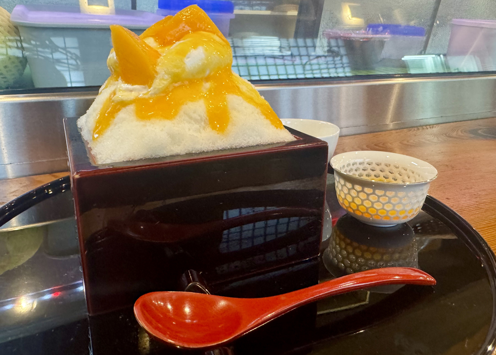
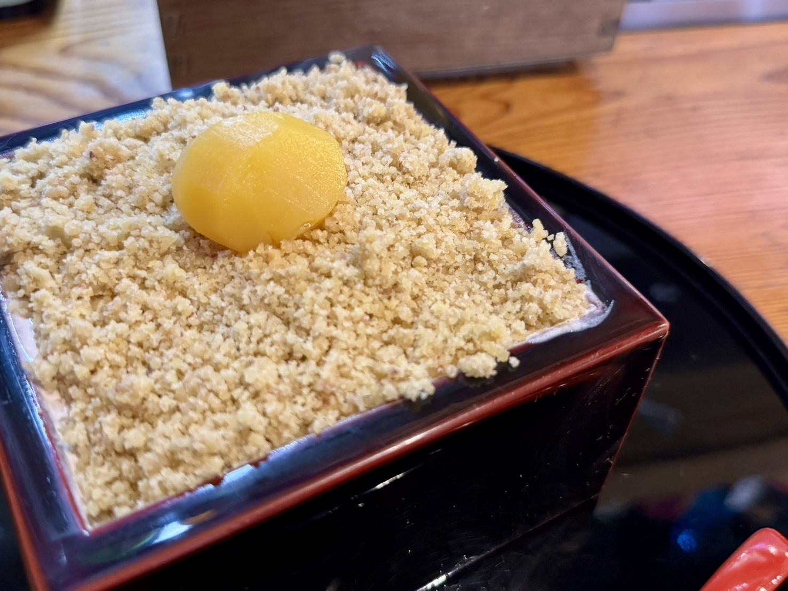
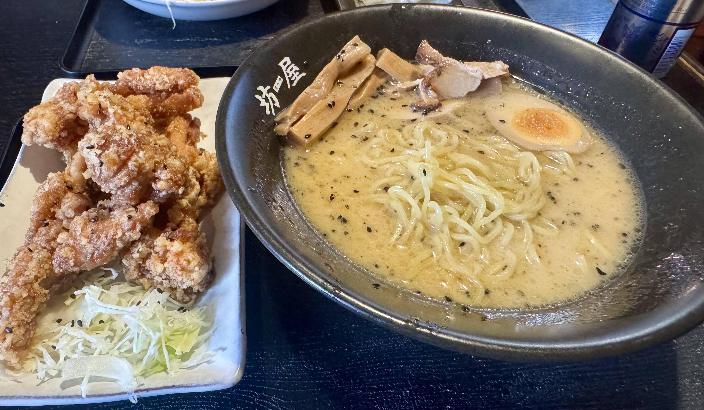
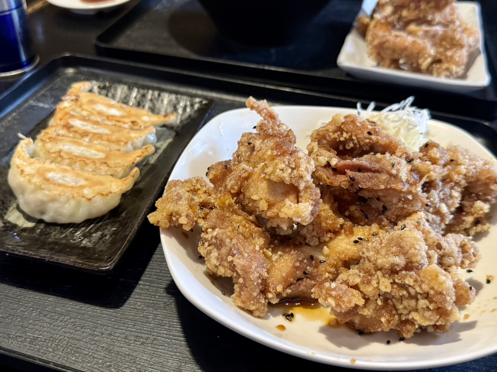

週末のかき氷とわらび餅！やきとり肥後
舞阪で訪れたのは「やきとり肥後」さん。
夜は焼き鳥の居酒屋で、5月から9月の土日はかき氷も出しています。
いただいたのは、マンゴーをのせたかき氷です。
ふわっと積んだ氷の上に、大きなマンゴーとソースがのっています！

もう一つは、栗のかき氷です。
栗は上にのっているだけでなく、ふわふわな削り氷の下にもたくさん隠れていました。

===店舗情報===
店名: やきとり肥後
リンク: Instagram
住所: 静岡県浜松市中央区舞阪町舞阪2118-1-1
豚骨ラーメンと唐揚げの「坊屋」
続いて訪れたのは、舞阪のラーメン店「坊屋」さん。
ラーメンの種類が多く、チャーハンとのセットも人気のお店です。 また、筆者が小学生の頃から通うお店でもあります。
こちらは、お上品な豚骨スープのラーメン。
メンマ、チャーシュー、味玉がのっていて、黒ごまも散らしてあります。
唐揚げも追加で注文しました✌︎

こちらは餃子と、もう一皿の唐揚げです。
唐揚げは衣がカリカリで、黒ごまがふってあります。

===店舗情報===
店名: 坊屋
リンク: ホットペッパーグルメ
住所: 静岡県浜松市中央区馬郡町4162
どちらのお店もとてもオススメです！